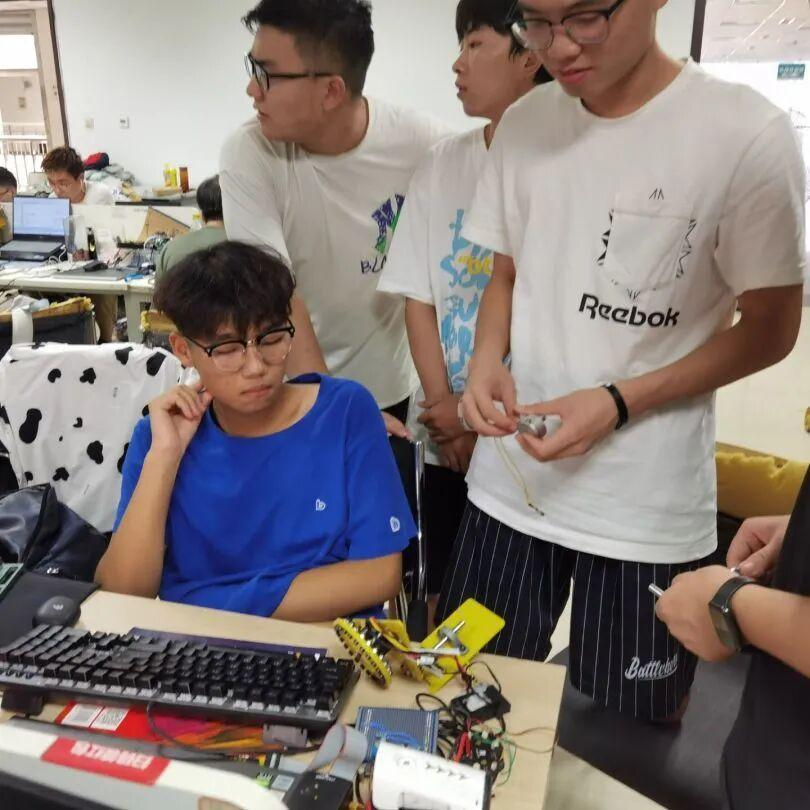
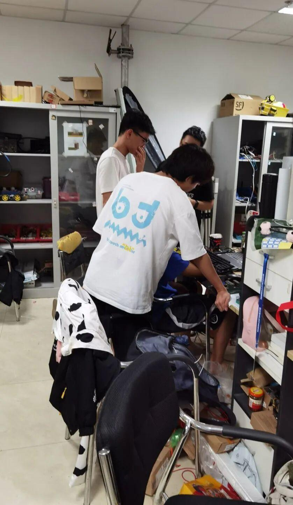
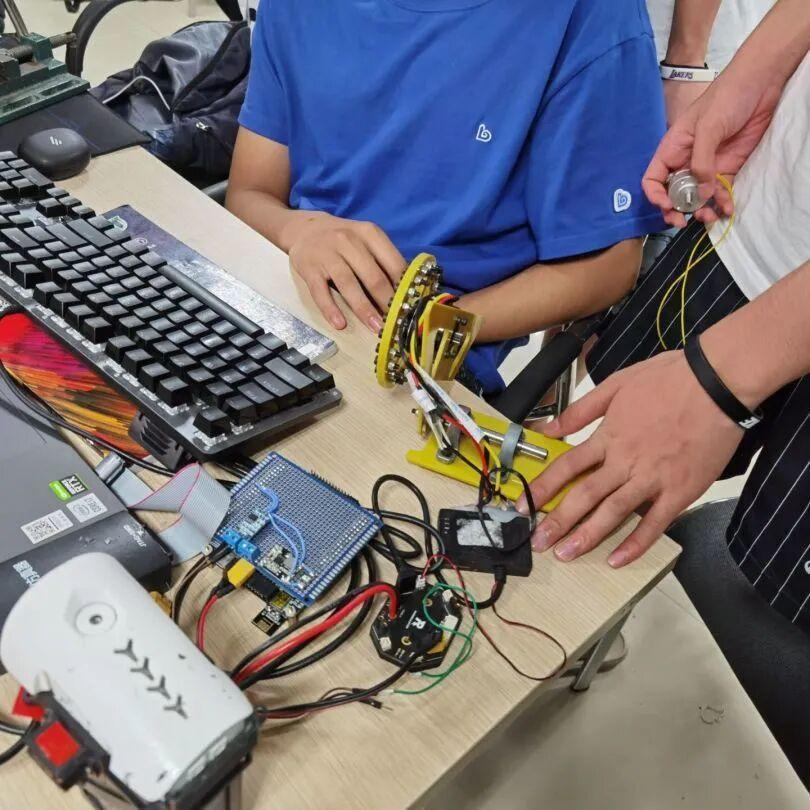
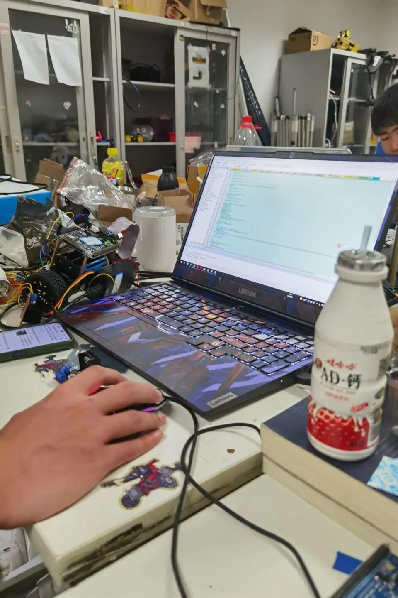
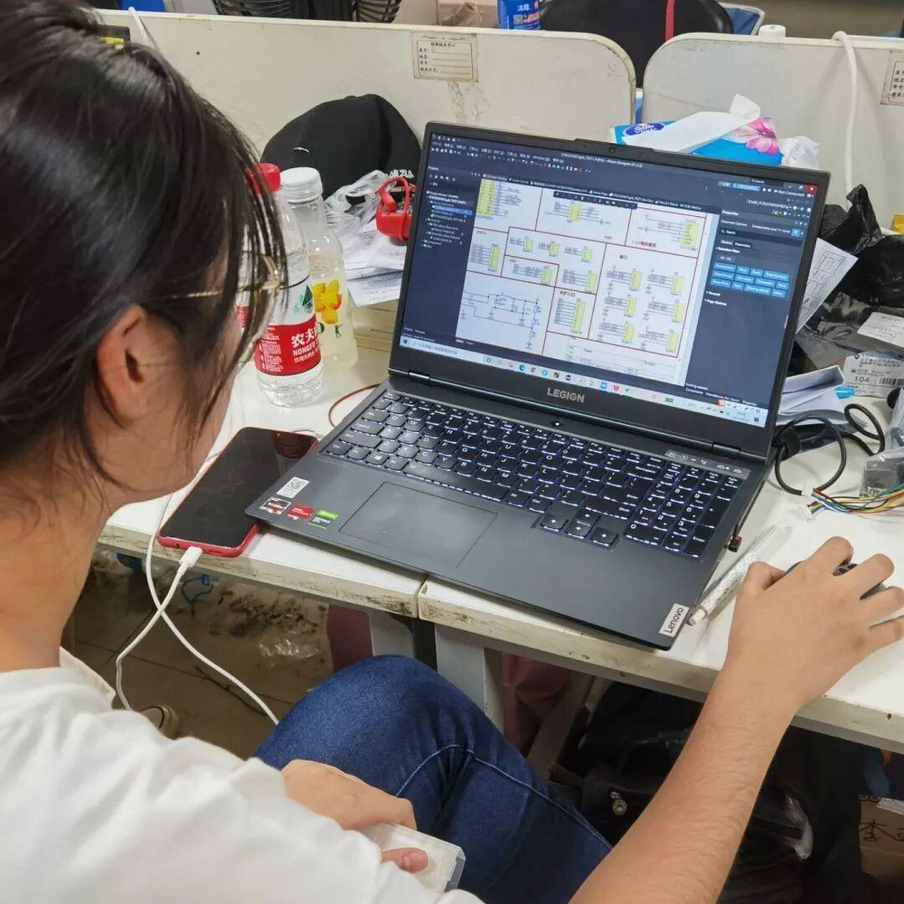
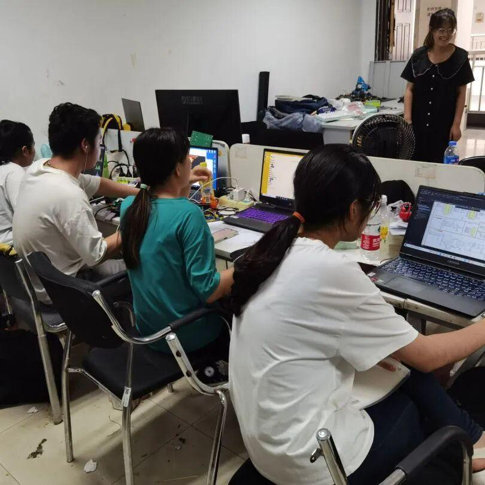
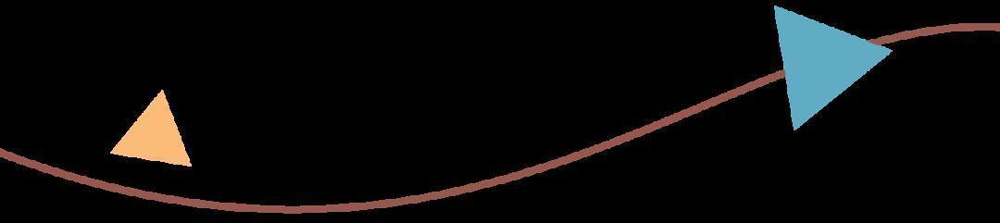
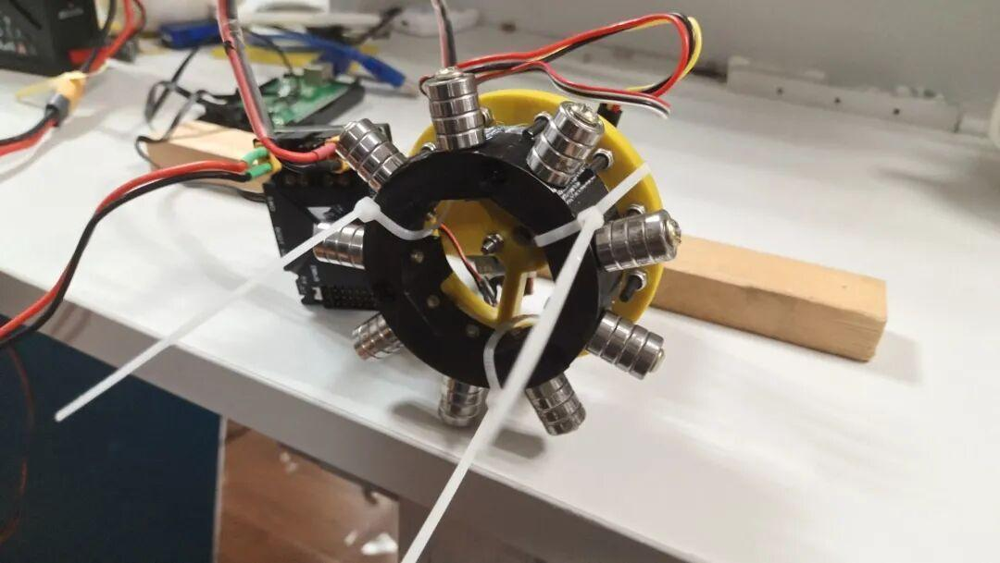
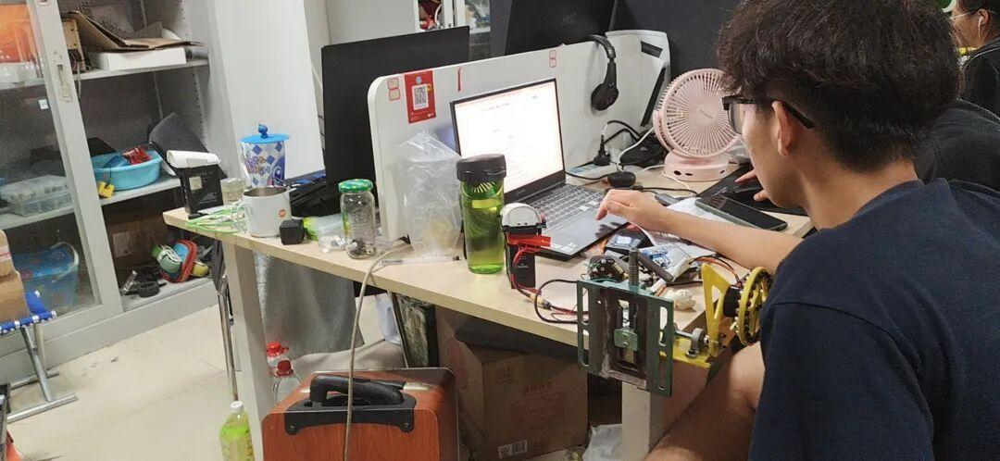

特别假期——留校篇
HAPPY
HOLIDAY
学习中！




工作ing！





动量轮

调试动量轮
为了鼓励队员们学长带着一起体验了rm英雄进行对射，让队员们提起兴趣，虽然学长们也会在队员们学习的时候偷偷去打台球。（有1说1，学长多少有点不太厚道呀！🤔）
小编有话说
即使是放假了，他们还要在学校里继续努力，小编也有点敬佩他们了。
所以说，我们在家不能只抱着手机躺在床上，也要像队员们学习，即使在假期也仍然努力的学习！

祝大家有一个愉快的假期！
• 完美假期 •
排版|刘洪溥